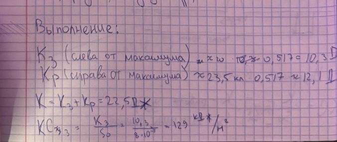
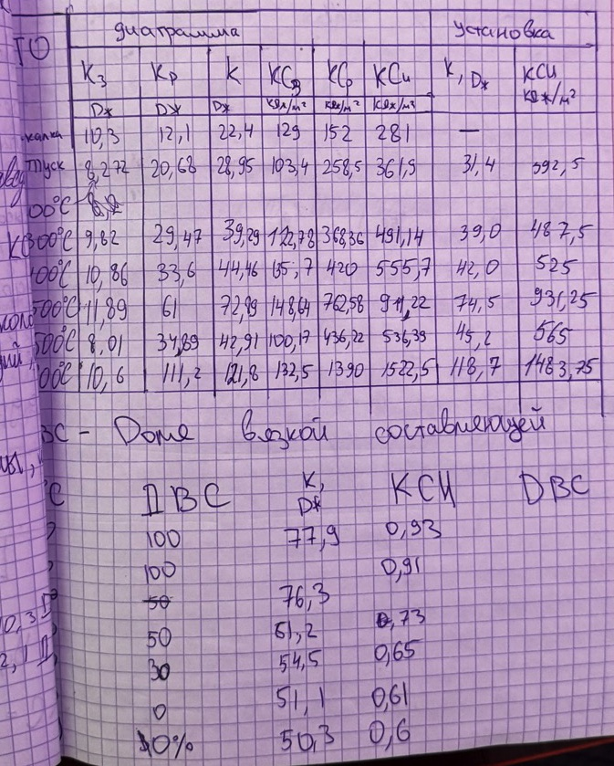
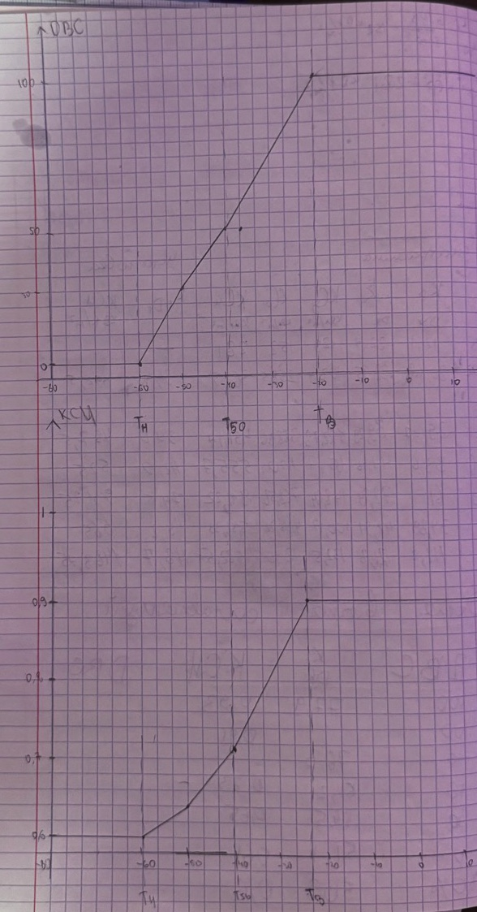
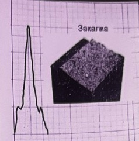

Лабораторная работа № 3
Ударная
вязкость
Маятник бьёт по стальному бруску. Разберём сам удар, график из тетради и то, откуда взялись 281 кДж/м².
Начать с нуляИспытание Шарпи · вид сбоку
Первое чтение · 5 коротких шагов
Что мы сделали в этой лабе?
Взяли стальной брусок, ударили по нему и выяснили, сколько энергии потребовалось, чтобы его сломать.
Сначала посмотри, как это выглядит
В ролике следи за грузом на длинной ручке. Это маятник. На установке он качается вниз, проходит через место, где лежит брусок, и поднимается по другую сторону.
Демонстрация профессора Райнера Шваба на английском. Ниже тот же принцип показан на схеме с русскими подписями. Есть и ролик о копре МИК-300 с русским описанием.
Шаг 1
Почему брусок треснул именно посередине?
Вспомни лист бумаги с маленьким надрывом. Когда тянешь лист, разрыв обычно идёт от этого места. Перед опытом на стальном бруске тоже делают выемку, чтобы трещина началась в заданном месте. У тебя выемка округлая, как буква U. Её называют U-надрезом.
Концы бруска упираются в две опоры. Маятник бьёт в середину с обратной стороны от надреза. Брусок сгибается, надрез раскрывается, от его дна идёт трещина.
Нажми «Пуск» и проследи за грузом
Оранжевый груз — маятник. Светлый брусок справа — образец.
Шаг 2
Как узнать, сколько энергии забрал брусок?
Представь качели. Если на пути ничего нет, они поднимаются почти до прежней высоты. Если на пути брусок, часть энергии качелей уходит на его изгиб и разрушение. После удара маятник поднимается ниже. Установка по этой разнице показывает работу удара.
Это условный пример. В тетради работа для закалки получилась около 22,49 Дж по диаграмме.
Шаг 3
Зачем на графике считать клетки с двух сторон?
Когда брусок только начинает гнуться, сила растёт. На рисунке это подъём к вершине. Когда трещина пошла дальше и брусок слабеет, сила падает. Это спуск с вершины.
Гнули брусок, пока не появилась трещина. В тетради около 20 клеток.
Продолжали ломать брусок, пока трещина росла. В тетради около 23,5 клетки.
Сила, умноженная на перемещение, даёт работу. На графике каждая клетка покрывает небольшой шаг по силе и по перемещению. Складываем эти кусочки и получаем работу. В твоём графике одна клетка соответствует 0,517 Дж. Умножаем 20 и 23,5 клетки на 0,517. Получаем примерно 10,34 Дж на начало трещины и 12,15 Дж на её рост. Вместе 22,49 Дж.
Посмотреть, где эти площади на графикеШаг 4
Откуда взялось 281?
Толстый брусок обычно требует больше энергии для разрушения, хотя сталь может быть той же. Поэтому для сравнения делят энергию на площадь металла, который остался под надрезом. У тебя эта площадь равна 80 мм².
22,49 Дж ÷ 80 мм² ≈ 0,281 Дж/мм². В тетради результат записан в другой единице. Это те же 281 кДж/м². Для бруска с U-надрезом это число называют KCU.
Почему 0,281 и 281 — одно и то же?
В одном квадратном метре миллион квадратных миллиметров. Поэтому 0,281 Дж/мм² × 1 000 000 = 281 000 Дж/м². В одном килоджоуле 1000 джоулей. Получаем 281 кДж/м².
Шаг 5
Что показывает график с минусовыми температурами?
После удара можно осмотреть место разлома. На одной части поверхности видно, что металл перед разрывом успел заметно деформироваться. Эту часть называют вязкой. ДВС показывает, какой процент поверхности она занимает.
В тетради при −60 °C её почти нет, при −40 °C она занимает примерно половину, а около −20 °C — почти всю поверхность. Поэтому −40 °C у тебя подписано T₅₀. Индекс 50 — это процент площади излома. Нижний график показывает другое измерение для этой серии: сколько энергии приходится на площадь сечения при разных температурах.
Открыть оба графика из тетрадиМожешь рассказать в трёх фразах?
Маятником сломали стальной брусок с надрезом. По графику посчитали отдельно энергию, чтобы трещина появилась и чтобы дошла до конца. Сложили эти энергии, разделили на площадь металла под надрезом и получили ударную вязкость.
Проверить себя карточкамиУстановка и ход работы
От проверки копра до удара
Выше можно посмотреть анимацию удара. Здесь — как от установки пришли к числам в отчёте.
Проверяют образец и копёр
Материал из пособия — сталь 09Г2МФБ. В твоей записи перечислены маятниковый копёр с регистрацией диаграммы, секундомер, линейка и термопара. По методике сверяют геометрию образца, измеряют расстояние от оси маятника до точки контакта бойка с образцом. Трижды засекают 100 полных колебаний, чтобы получить период.
Поднимают маятник и ставят образец на опоры
Брусок опирается концами, удар приходится по середине на стороне напротив надреза. При прогибе дно надреза оказывается в растянутой зоне. Трещина может стартовать именно там.
Снимают два вида показаний
Указатель копра даёт полную работу K. По методике для записи диаграммы тензодатчик регистрирует нагрузку, датчик перемещения — перемещение ножа. Диаграмма нужна для независимого определения K и разделения на Kз и Kр.
Сравнивают образцы
Пособие предусматривает сопоставление U, V и T. В присланной обработке читаются сравнение состояний термообработки для KCU и температурная серия. Отдельные измерения KCV, KCT и результаты тарировки на этих фото не видны.
Как проверяют характеристики копра
Период. Если три измерения времени 100 колебаний равны t₁, t₂, t₃, то T = (t₁ + t₂ + t₃)/300. Сто колебаний засекают ради меньшего влияния реакции секундомером.
Запас работы и скорость. При подъёме маятника на высоту h его центра масс запас энергии равен mgh. Если угол α отсчитан от нижней вертикали, а r — расстояние до центра масс, h = r(1 − cos α). Для жёсткого маятника без потерь mgh = Iω²/2 и v = ωR, где I — момент инерции относительно оси, R — расстояние от оси до бойка. Для численного расчёта нужны характеристики конкретного маятника.
Где приходится удар. Для малых колебаний приведённая длина, равная расстоянию до центра удара, l = gT²/(4π²). Её сопоставляют с измеренным расстоянием от оси до точки соударения. Близость помогает уменьшить импульсную реакцию на оси.
Теоретическое введение · с. 25–30
Теория из пособия простыми словами
Пример. Тонкую стальную проволоку можно долго гнуть перед разрывом. Другой кусок металла может держать большую силу, но треснуть, почти не согнувшись. Вязкость учитывает два обстоятельства: какое усилие потребовалось и насколько материал успел деформироваться.
Упругая деформация исчезает после снятия нагрузки. Пластическая остаётся. Прочность отвечает на вопрос, какие напряжения выдерживает металл. Пластичность показывает, насколько он способен деформироваться до разрушения. Вязкость показывает, сколько энергии приходится затратить на разрушение.
Почему важны оба свойства
На графике «напряжение — деформация» высота отражает напряжение, ширина — деформацию. Площадь под кривой даёт работу на единицу объёма. У высокой, но очень узкой фигуры площадь может оказаться небольшой.
Пособие приближает пластический участок прямой и пренебрегает малой упругой деформацией. Тогда площадь — трапеция.
Откуда в пособии формула с модулем пластичности D?
На линейном пластическом участке наклон D равен приросту напряжения, делённому на прирост деформации. Значит, eк ≈ (Sк − σт)/D. Подставляем в площадь трапеции и используем разность квадратов. Получаем a ≈ (Sк² − σт²)/(2D). Здесь σт — предел текучести, Sк — истинное сопротивление разрушению, eк — истинная деформация при разрушении. Формула относится к приближённой диаграмме пособия.
Почему испытывают именно ударом и с надрезом
Скорость. При статическом испытании скорость деформации около 10⁻⁴–10⁻² с⁻¹, при ударном — порядка 10² с⁻¹. При быстром нагружении свойства и порядок материалов по сопротивлению разрушению могут измениться.
Надрез. При ударе середина бруска гнётся. На стороне надреза металл растягивается, напряжения концентрируются у его дна. Пособие связывает надрез с более жёстким напряжённым состоянием и ограничением пластической деформации. Коэффициент мягкости α — отношение максимального касательного напряжения к максимальному приведённому нормальному. Меньше α — жёстче состояние.
Скруглённый надрез. В твоей таблице указан KCU.
Острый V-надрез. Геометрия задаёт другие условия у вершины.
Усталостная трещина наведена заранее циклическим нагружением.
По ГОСТу, как он описан в пособии, KU, KV, KT — работы удара в джоулях. Буква С в KCU, KCV, KCT означает, что работу разделили на исходную площадь под концентратором. Геометрия влияет на результат, так что сравнивать значения нужно с учётом типа и размеров образцов.
Обработка опыта
Как клетки превращаются в джоули
На диаграмме по вертикали откладывают силу F, по горизонтали прогиб f. Одна клетка по площади равна произведению масштабов осей: шаг по силе в ньютонах × шаг по прогибу в метрах. Получаются Н·м, то есть джоули.
Два этапа разрушения
До максимума образец упруго и, в зависимости от материала, пластически деформируется. По методике за границу принимают максимум перед падением силы. Площадь слева относят к зарождению трещины.
После максимума трещина развивается, оставшееся сечение ослабевает. Площадь справа относят к распространению трещины.
Почему одинаковая общая вязкость может скрывать разное поведение?
На рис. 3.3 пособия сравниваются четыре кривые с одинаковой общей площадью. Для материала 1 основная работа ушла на упругую деформацию до разрушения. Для материала 2 — на пластическую деформацию возле надреза. У обоих работа дальнейшего роста трещины практически нулевая. Материалы 3 и 4 тратят часть энергии именно на рост трещины; у материала 4 эта часть ещё больше.
Зелёная часть — работа до максимума, оранжевая — после. Длины частей условные: в пособии это качественное сравнение, без чисел.
Твой расчёт для закалки
Слева примерно 20 клеток, справа примерно 23,5. Коэффициент по записи — 0,517 Дж на клетку.
Kз ≈ 20 × 0,517 = 10,34 Дж. Kр ≈ 23,5 × 0,517 = 12,1495 Дж. Сумма — 22,4895 Дж, то есть около 22,49 Дж.
По записи S₀ = 8 × 10⁻⁵ м² = 80 мм². Для стандартного учебного примера 10 × 10 мм и U-надреза глубиной 2 мм это 10 × (10 − 2) = 80 мм². Надрез убрал 2 мм высоты.
22,4895 / 0,00008 = 281 118,75 Дж/м² ≈ 281 кДж/м². По той же формуле получаем KCз ≈ 129 и KCр ≈ 152 кДж/м².

Пересчитай по клеткам
Второй способ · метод Дроздовского
Берут образец, где усталостная трещина уже наведена. Большая часть работы удара уходит на её развитие. Поэтому KCT ≈ KCр, а KCз ≈ KCU − KCT для U-образца или ≈ KCV − KCT для V-образца. В этих формулах все величины уже поделены на площадь сечения.
Готовая трещина требует дополнительной работы на старт. Между подготовкой и ударом возможны процессы вроде коррозии у трещины. По объяснению пособия KCT завышает KCр, а разность занижает KCз. Для пластичных материалов расхождение может быть существенным.
Записи из тетради
Что читать в каждой таблице
В первых трёх столбцах — работы в Дж, далее те же величины на единицу площади в кДж/м². Последние два столбца — полная работа и ударная вязкость по установке. Никаких чисел по установке для закалки на фото нет. Значок ≈ у режима означает, что его подпись читается частично.
| Режим | По диаграмме | По установке | ||||||
|---|---|---|---|---|---|---|---|---|
| Kз | Kр | K | KCз | KCр | KCU | K | KCU | |
Энергии K, Kз и Kр указаны в Дж. Ударная вязкость KCU, KCз и KCр — в кДж/м². Переписанные значения сохраняют округление и возможные арифметические расхождения оригинала.

Что можно сказать по своим данным
- По диаграмме закалённый образец дал около 281 кДж/м². Максимальное записанное значение в серии — 1522,5 кДж/м², по установке для той же строки — 1483,75 кДж/м².
- В строке с максимумом Kз = 10,6 Дж, Kр = 111,2 Дж. Около 91% общей работы в этой строке ушло на рост трещины: 111,2 / 121,8 ≈ 0,913.
- Пример проверки по установке: 31,4 Дж / 80 мм² = 0,3925 Дж/мм² = 392,5 кДж/м². По диаграмме в этой строке указано 361,5 кДж/м². Обработка по клеткам, точность границы у пика и считывание указателя могут влиять на расхождение.
- По записанному ряду есть спад между 911,22 и 536,39 кДж/м². Слова «при повышении температуры отпуска вязкость всё время росла» эти данные не подтверждают.
Почему сравнивают разные режимы термообработки
В таблице за исходное сравнение взята закалка. Закалка и последующий отпуск изменяют структурное состояние стали, а структура влияет на сочетание прочности и пластичности. Режимы сравнивают по измеренным KCU, KCз и KCр. Точного вывода о том, какая именно структура возникла в каждой строке, по одной таблице ударов сделать нельзя.
Что должно быть в таблице проверки копра по пособию
Углы подъёма маятника и выноса опор, измеренная и проектная энергия удара, относительная и допустимая погрешности, расстояния от оси до центра удара и центра соударения, скорость удара и допустимая скорость. В доступных фото чисел для заполнения этой таблицы нет. В итоговой таблице пособия также предусмотрены KU, KV, KT и удельные характеристики для всех типов концентраторов.
Температурная серия
Как прочитать оба графика
Здесь по горизонтали — температура испытания. В предыдущей таблице рядом с режимом стоит температура отпуска, то есть температура обработки стали до испытания. Это разные вещи. Один опыт сравнивает режимы подготовки материала, другой показывает, как материал ведёт себя при испытании на холоде.

Открыть увеличенный фрагментВерхний график · ДВС
ДВС — доля вязкой составляющей по площади поверхности излома. При вязком разрушении происходит заметная пластическая деформация, у хрупкого она мала. Отметка 50% означает, что около половины площади излома имеет признаки вязкого разрушения.
Нижний график · KCU
В холодной части виден уровень около 0,60, в тёплой — около 0,9. При снижении температуры в этой серии работа удара на единицу площади уменьшается. Единицы нижней шкалы на фото не подписаны. Значения ниже сохранены в шкале тетради.
Как найти T50
Поставь палец на отметку 50% по вертикали верхнего графика. Иди вправо до линии, затем вниз к шкале температуры. Получится примерно −40 °C. По графику нижняя граница перехода около −60 °C, верхняя — около −20 °C. Это границы по твоему рисунку и принятому критерию.
Проследи переход по двум графикам
Линии реконструированы по рисунку и точкам; между опорными точками значения условно интерполированы.
| Строка | ДВС, % | K, Дж | KCU, шкала тетради |
|---|
Левый край температурной таблицы закрыт страницей. Подписи температур для каждой строки нельзя уверенно восстановить по фото. Крайние повторяющиеся значения относятся к полкам, которые на рисунке показаны приближённо. В последней строке у ДВС есть помарка, значение около нуля согласуется с рисунком.

Подготовка к защите
Расскажи ход работы за минуту
Мы определяли ударную вязкость стали 09Г2МФБ. Образец кладут на две опоры и бьют маятником по середине напротив U-надреза. Копёр показывает полную работу удара. По диаграмме «нагрузка — прогиб» мы отдельно нашли работу до максимума и после него. Эти площади соответствуют зарождению и распространению трещины. Для закалённого образца суммарная работа около 22,49 Дж, а после деления на 80 мм² получаем около 281 кДж/м². По температурному графику при −40 °C доля вязкой составляющей около 50%.
Спроси себя перед защитой
- Могу ли я пальцем показать, куда ударил маятник и с какой стороны надрез?
- Могу ли я объяснить, зачем нужна диаграмма, если K уже показал прибор?
- Могу ли я вывести 281 кДж/м² с единицами без подсказки?
- Могу ли я объяснить, что именно означает 50% на верхнем температурном графике?
Активное вспоминание
Карточки для защиты
Сначала попробуй ответить своими словами. Затем открой объяснение и отметь, получилось ли. В колоде все 13 контрольных вопросов из § 3.8 и вопросы по твоей обработке.